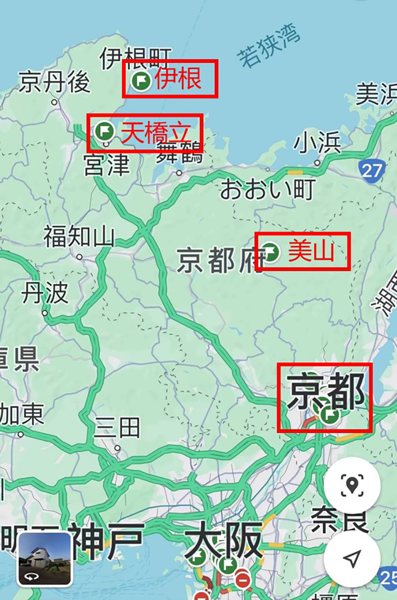
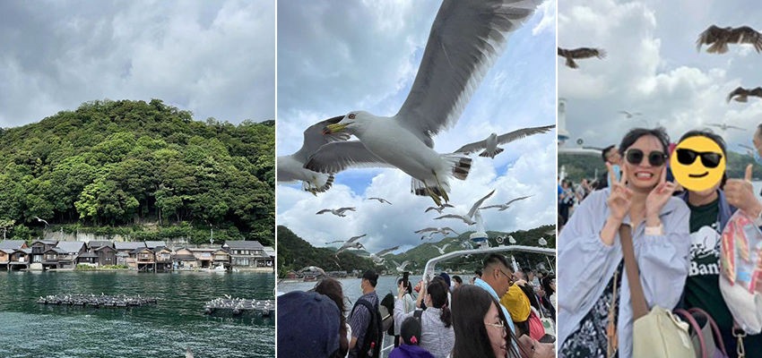
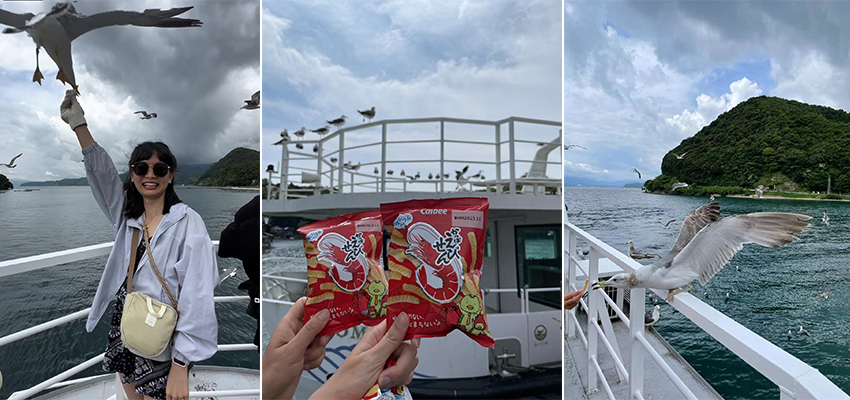
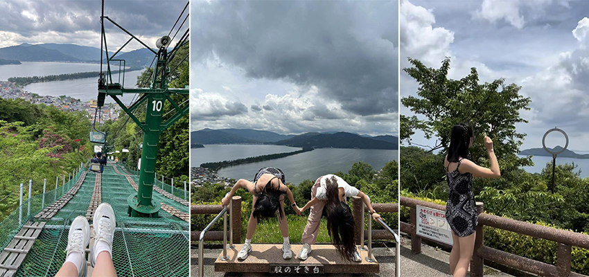
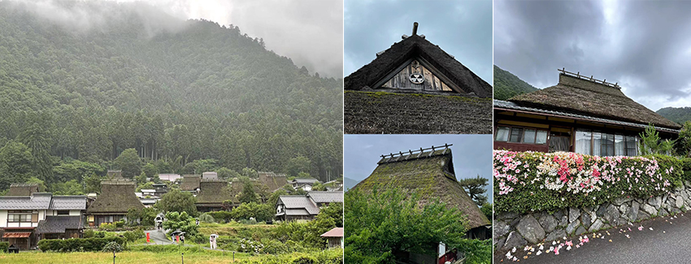

說到日本京都，大家會想到什麼呢？相信許多人腦海中瞬間浮現的畫面總是富有濃厚歷史氣息的清水寺、擁有上萬個鳥居的伏見稻荷大社等位於市區的熱門景點。而這次的日本行，特別報名了KKday上的京都郊區一日遊，分別去到伊根、天橋立、美山，體驗京都的山海之美
|  |
#海之京都－伊根
位於京都府北部丹後半島的東北部的伊根灣，有「海之京都」的美稱，有豐富的魚獲資源，且因地形的關係，海水平靜，潮差落差小，因而發展出獨特的舟屋建築，舟屋一樓為船舶停靠處，二樓為生活居住的空間，目前舟屋還是有居民在居住，部分則轉型成了民宿，咖啡廳，商店等。這次的行程有包含25分鐘的伊根遊覽船，可以從海上視角欣賞環繞著伊根灣且面海背山的舟屋們。
|  |
出航期間會有許多海鷗，甚至是老鷹盤旋於上空，為的就是觀光客們手上的蝦味先！！ 出港旁的商店都會販售，只要拿著蝦味先並將手舉高，海鷗們便會快狠準的叼走享用，這種近距離的互動，加上真的太多隻圍繞了，是個驚嚇刺激又特別的體驗！
*餵食的時候建議戴手套，避免手不小心被啄傷～
|  |
#日本三景之一－天橋立
天橋立是在因沿岸沉積而形成的沙洲地形，兩側都是海，沙洲上充滿古松樹，全長約3.6公里，可以徒步或是騎腳踏車穿越。一日團的行程是帶我們到著名的景點-傘松公園， 從高處來欣賞，到達公園的方式可以透過纜車或單人吊車，上面的風景真的很漂亮，遼闊且平靜，而拜訪這個景點，有兩項必體驗的事，第一：特殊觀景方式-從胯下觀賞翻轉的天橋立，大家說會像是在空中飛舞的青龍，因此此奇景也被稱之為「飛龍觀」，第二：智慧之輪-據說只要成功將小瓦片丟穿過智慧之輪，就能開運解厄，實現願望！
|  |
#日本三大茅草屋聚落－京都美山町
日本三大茅草屋分別為白川鄉合掌村、福島大內宿及京都美山町，雖都為茅草屋，但建築形式不太相同， 美山町屬於北山型的茅草屋，整棟建築沒有使用任何的釘子，牆面為木頭，屋頂則用芒草、粗草繩、千木架雪割等特殊技術而成，其中千木一定是單數，通常是五組，少數為七組，而這其實也象徵著財力，因千木越多，屋子越大。此外，屋頂兩側的三角處叫破風，上面的圖騰每家都不一樣，是值得細細觀察的地方。美山的茅草聚落其實不大，也不是個商業化的地方，氛圍純樸安靜，漫步在這裡非常放鬆愜意，也彷彿身處在童話世界。
|  |
這三個景點都非常有特色，也是在別的地方無法體驗與感受到的，雖然離京都市區確實有段距離，車程至少1－2小時以上，但對這一日遊，我覺得很滿意，也是個印象深刻的旅程，如果有時間的話也推薦大家可以納入行程！